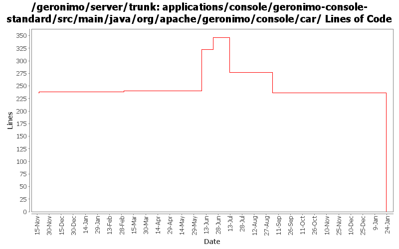

[root]/applications/console/geronimo-console-standard/src/main/java/org/apache/geronimo/console/car

| Author | Changes | Lines of Code | Lines per Change |
|---|---|---|---|
| Totals | 58 (100.0%) | 375 (100.0%) | 6.4 |
| djencks | 6 (10.3%) | 236 (62.9%) | 39.3 |
| dwoods | 5 (8.6%) | 126 (33.6%) | 25.2 |
| pmcmahan | 1 (1.7%) | 7 (1.9%) | 7.0 |
| jdillon | 16 (27.6%) | 4 (1.1%) | 0.2 |
| vamsic007 | 2 (3.4%) | 2 (0.5%) | 1.0 |
| kevan | 28 (48.3%) | 0 (0.0%) | 0.0 |
(GERONIMO-3747) Moved applications/* to plugins/*
0 lines of code changed in 14 files:
GERONIMO-3453 Make installing xml attributes into configs.xml work. Introduce a utility class for handling the jaxb details
2 lines of code changed in 1 file:
GERONIMO-3330 GERONIMO-3453 Use the new plugin schema Paul came up with. Use jaxb for geronimo-plugin xml handling. Modify the car-maven-plugin to generate geronimo-plugin.xml and explicitly specify the dependencies for the plan in pom.xml. This introduces several more jaxb libraries in lib which I hope can be removed again. Also the console plugin handling is barely working.
234 lines of code changed in 5 files:
GERONIMO-2757 add geronimo-versions to exported plugins. Patch submitted by Jason Warner.
7 lines of code changed in 1 file:
GERONIMO-2757 Enhance plugin schema to allow for multiple versions of a plugin - Part 2
35 lines of code changed in 3 files:
GERONIMO-2757 Enhance plugin schema to allow for multiple versions of a plugin - Part 1. Also updated geronimo-plugin.xml files for the configs to point to the 2.0 repo.
91 lines of code changed in 2 files:
Std props
4 lines of code changed in 2 files:
modified svn properties
2 lines of code changed in 2 files:
GERONIMO-2537 Update the src headers in the non-module files. They need to be compliant with the new ASF src header and copyright policy (http://www.apache.org/legal/src-headers.html). I also did some cleanup of the src headers and tried to get them in a consistent format
0 lines of code changed in 28 files: